Why we cooked so much
We love to cook, and Brazil made it easy. The beef is among the best we’ve had anywhere — look for picanha (top sirloin cap) at the butcher counter. Seafood is fresh and affordable on the coast, and the fruit is on another level: mango, papaya, passion fruit, pineapple, cashew fruit, cacao pulp and things you’ve never heard of. A supermarket run and a place with a kitchen turned into some of our favorite meals in Brazil.

Fried cheese on the beach
Vendors walk the sand with small charcoal grills and serve queijo coalho — a firm, squeaky cheese grilled on a stick, sometimes brushed with oregano or sugarcane syrup. Salty, golden and perfect with a cold drink. We totally recommend it. Agree on the price before they start cooking, like with anything sold on the beach.

Acarajé and moqueca
Acarajé is the icon of Salvador: a black-eyed-pea fritter deep-fried in dendê oil, split and filled with vatapá (a creamy paste of bread, peanuts, cashews and shrimp), caruru (okra), tomato salad and dried shrimp. It’s sold by Baianas de acarajé in white lace dresses — their craft is recognized as Brazilian cultural heritage. When they ask “quente ou frio?”, they mean with or without hot pepper. Expect to pay around R$15–25 at well-known stands.
Where locals send you: the famous stands at Largo de Santana in Rio Vermelho (Acarajé da Dinha, run by the family of the late Dinha, opens in the afternoon; some stands are cash-only), and Acarajé da Cira nearby. Lines are part of the experience.
Moqueca baiana is a seafood stew of fish or shrimp simmered in a clay pot with coconut milk, dendê, tomato, onion, peppers and cilantro, served with rice, pirão (a fish-stock porridge) and farofa. One pot easily feeds two.

More Bahian dishes to order
- Bobó de camarão: shrimp in a silky cassava and coconut purée.
- Vatapá and caruru: rich side dishes often served together.
- Abará: acarajé’s steamed cousin, wrapped in banana leaf.
- Camarão no abacaxi: shrimp served in a hollowed-out pineapple — a fun island favorite.
- Casquinha de siri: crab gratin served in the shell.
- Tapioca: cassava crepes, sweet or savory, everywhere at breakfast.
- Cocada: chewy coconut sweets sold on beaches and in markets.

How to eat out like a local
- Por quilo restaurants (self-service, paid by weight) are the best-value lunch in Brazil.
- Prato feito (PF) — a set plate of rice, beans, salad and meat or fish — is cheap and filling.
- Portions are large — many dishes are meant for two.
- A 10% service charge is usually added to the bill in restaurants; it’s optional but customary.
- Lunch is the main meal; many kitchens close mid-afternoon.
Beer is everywhere — and for good reason
In the heat, beer and cold drinks are how everyone cools down. Little bars spill onto the sidewalk with plastic tables, and beer often comes in shared 600 ml bottles kept in an insulated sleeve. By around 2am, the streets near the beer spots are lined with empty bottles and crates. Locals heading to the beach bring huge coolers of drinks and snacks to last the whole family all day.
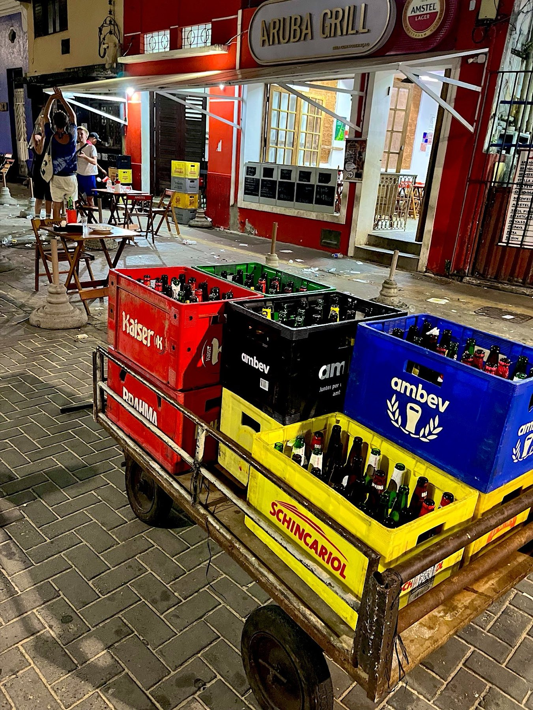
Caipirinha, Pitu and Catuaba: our verdict
We’re not big drinkers, but we tried the classics. Several caipirinhas were a real hit — cachaça, lime and sugar — and they’re even better made with passion fruit, caju or other fruits (a caipifruta). Pitu is a popular, inexpensive cachaça, the sugarcane spirit in a caipirinha. Catuaba is a sweet, herbal fortified drink you’ll see everywhere — honestly, we didn’t like it at all. Try a sip before committing to a bottle.
In the Pelourinho, look for cravinho, a clove-infused cachaça served in small cups at historic bars.

Non-alcoholic favorites
- Água de coco — fresh coconut water, cut open in front of you.
- Fresh juices (sucos) — passion fruit, cashew, acerola, cajá, graviola.
- Açaí — served frozen in a bowl with toppings.
- Guaraná — Brazil’s favorite soft drink.
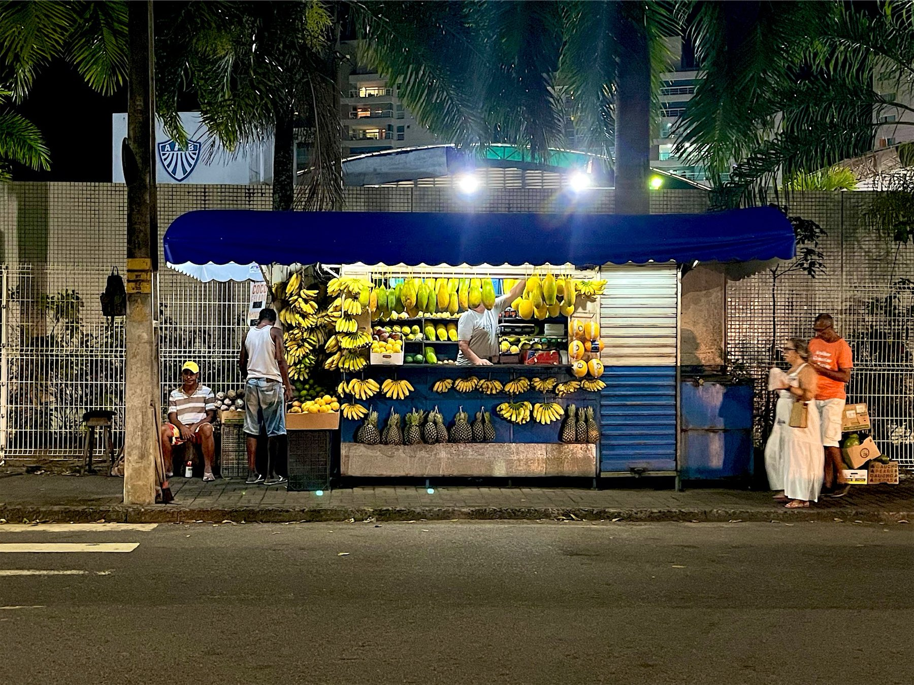
Food safety tips
Choose busy stands where food is cooked fresh in front of you. Dendê oil is rich — ease into it on your first day. Drink bottled or filtered water and ask for drinks “sem gelo” (without ice) if you’re unsure about the ice at small stalls.
Prices, schedules and rules checked November 2026. They change often in Bahia, so confirm with the operator or official source before you go.
In pictures


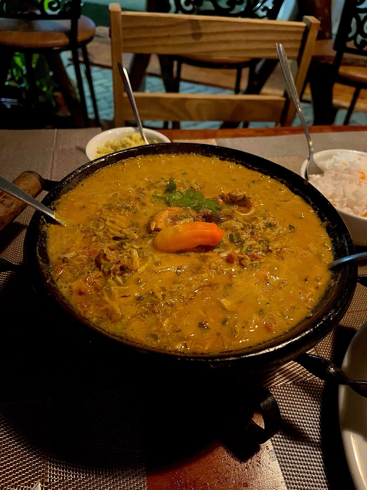
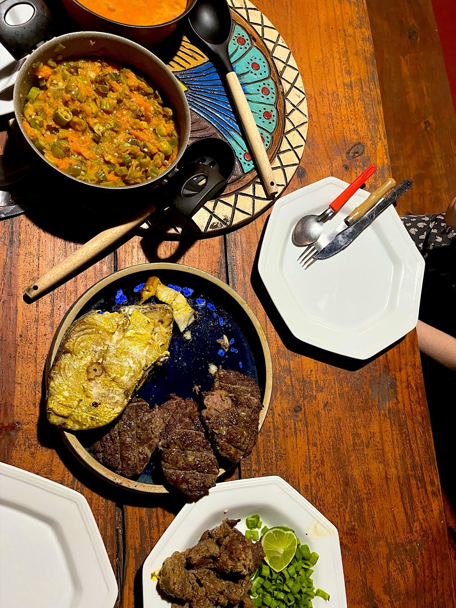
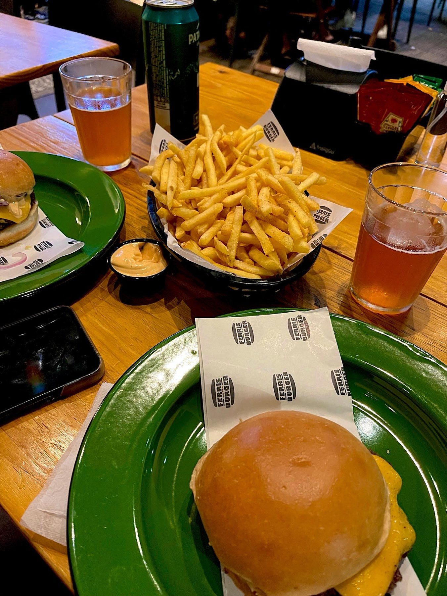
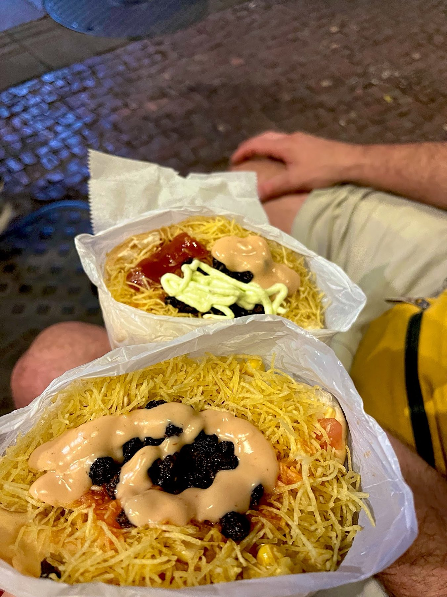
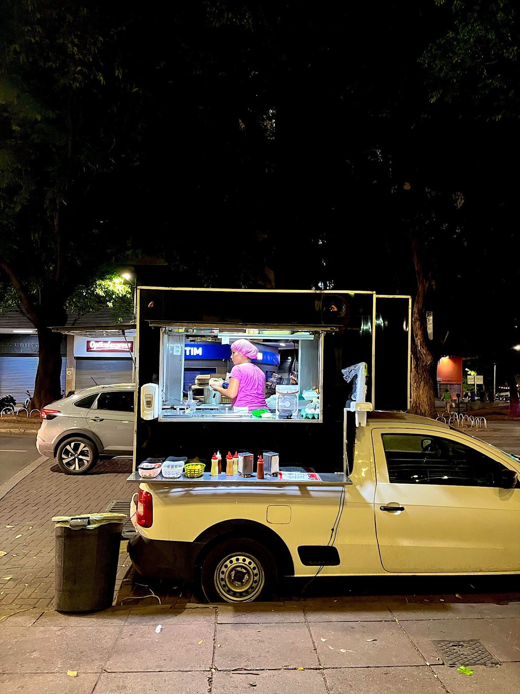

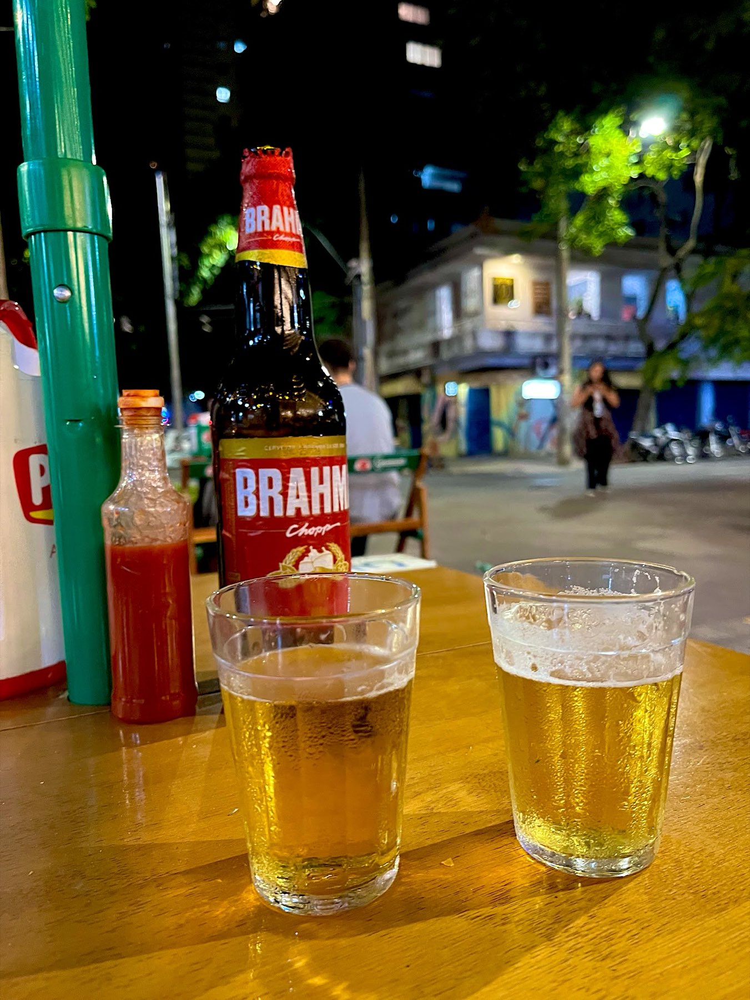
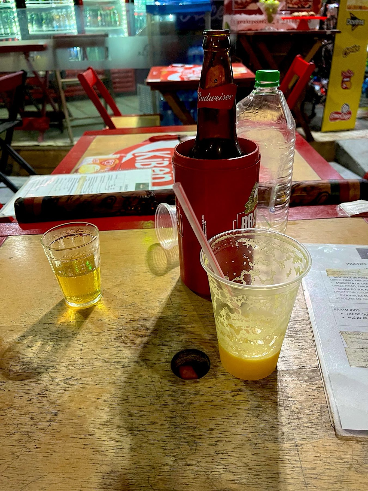
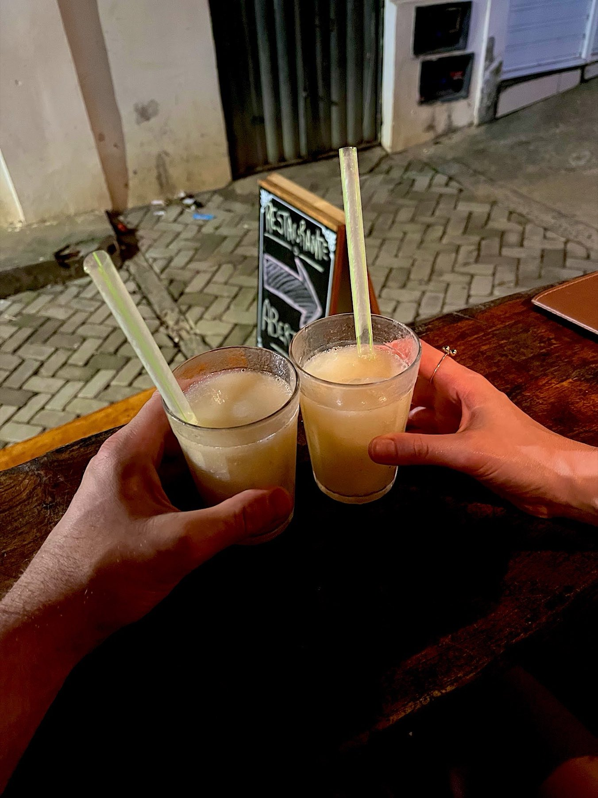
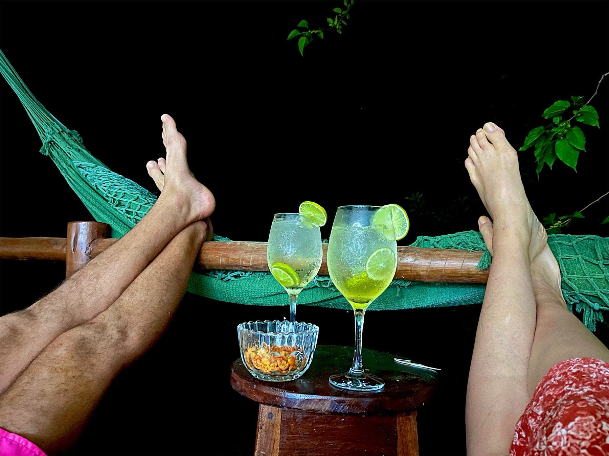
Frequently asked questions
What is the most famous food in Bahia?
Acarajé — a black-eyed-pea fritter fried in palm oil and stuffed with vatapá, caruru and shrimp — is Bahia’s most famous food, followed by moqueca baiana.
How much does acarajé cost in Salvador?
Around R$15–25 at well-known stands in 2026, such as those at Largo de Santana in Rio Vermelho. Some stands are cash-only.
Is Bahian food spicy?
Dishes are rich rather than hot, and pepper sauce is usually added on request. Say “frio” for no pepper.
Is Catuaba worth trying?
It is worth a sip out of curiosity, but we personally did not like it at all. Caipirinhas were much more our taste.